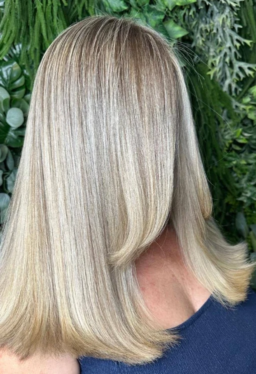
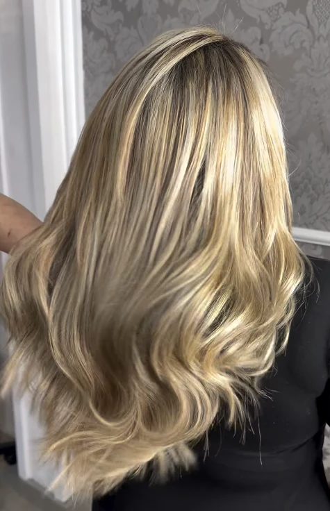
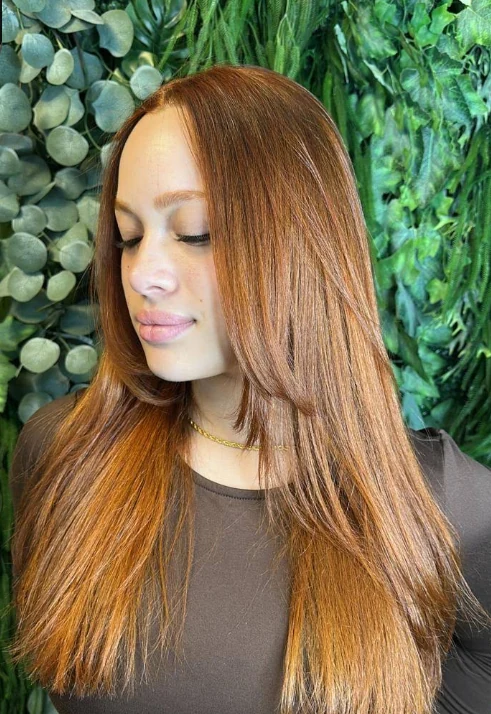
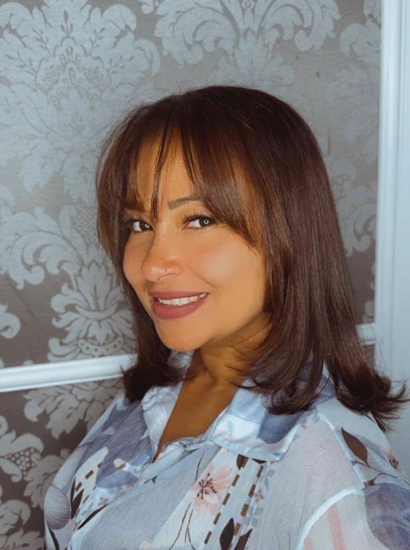
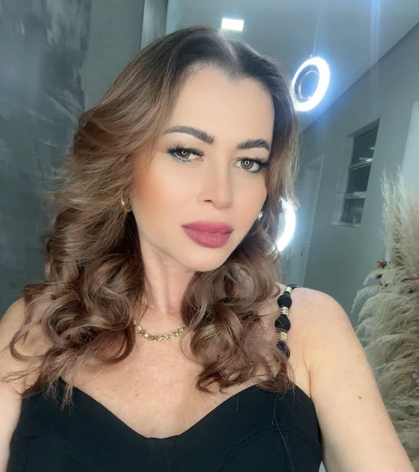
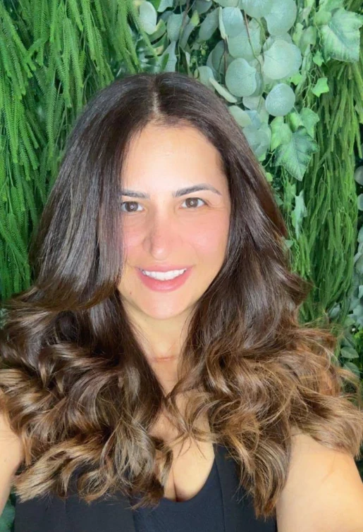
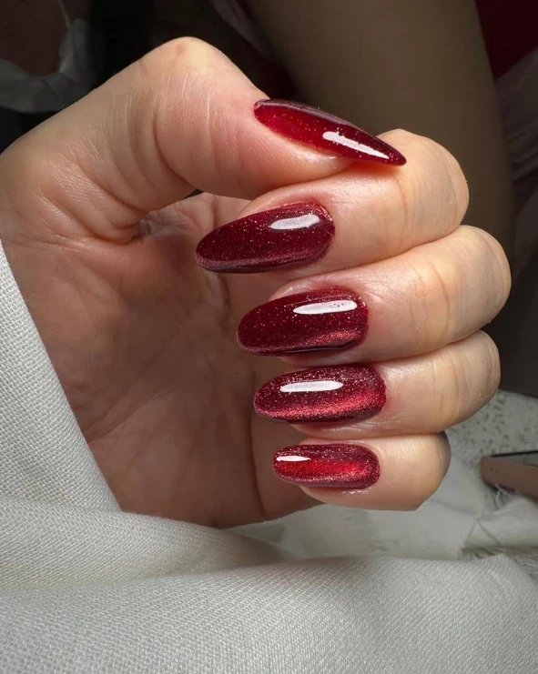

Seu cabelo do jeito que você imaginou
Cor, corte, tratamento e unhas no Km 18, em Osasco. Escolha um tom e veja um trabalho feito no studio.

O que fazemos
Valores e tempo de atendimento dependem do seu cabelo. Mande uma mensagem e tire suas dúvidas antes de marcar.

Mechas e loiros
Do loiro pérola ao mel. Leve uma foto de referência para conversarmos sobre o tom.
Perguntar sobre mechas e loiros
Coloração
Ruivos, castanhos e morenas iluminadas, com a cor pensada para você.
Perguntar sobre coloração
Corte
Camadas, franja ou um corte médio: o formato é combinado antes da tesoura.
Perguntar sobre corte de cabelo
Escova e modelagem
Liso alinhado ou ondas, para o dia a dia ou uma ocasião especial.
Perguntar sobre escova e modelagem
Tratamento capilar
Cuidado para fios finos, frágeis ou que passaram por química.
Perguntar sobre tratamento capilar
Resultados reais
Toque em uma foto para ampliar.
Cuidado com você e com os seus fios
Antes de agendar, conte o que você quer e a história do seu cabelo: química, último corte, rotina e o resultado que você espera.
Quem avalia o studio no Google fala do ambiente acolhedor, do carinho no atendimento e do cuidado com a saúde dos fios.
Conversar com o studioO que dizem as clientes
5,0 de média no Google, com 69 avaliações.
“Aqui somos bem tratadas do começo ao fim! Salão super agradável e aconchegante e o serviço excepcional! Sou cliente há quase 9 anos e não tem profissional melhor!!”
“Atendimento VIP, serviço nota 1.000. Profissionais excelentes, te tratam com muito carinho e dedicação!!!”
“A Silvia eh uma excelente profissional! Cheguei com receio, pq tinha ja um profissional que havia se mudado. Meu cabelo eh fino, frágil. Porém fui tratando com a silvia e meu cabelo foi recuperando.”
Monte sua mensagem
Escolha o que você quer fazer. O WhatsApp abre com o texto pronto e o horário é confirmado na conversa.
Onde estamos
R. Profª José Azevedo Minhoto, 197Km 18, Osasco, SP
- (11) 94786-1455
- SStuddios_@gmail.com
- @_sstudiio_
- Horários
- Consulte pelo WhatsApp